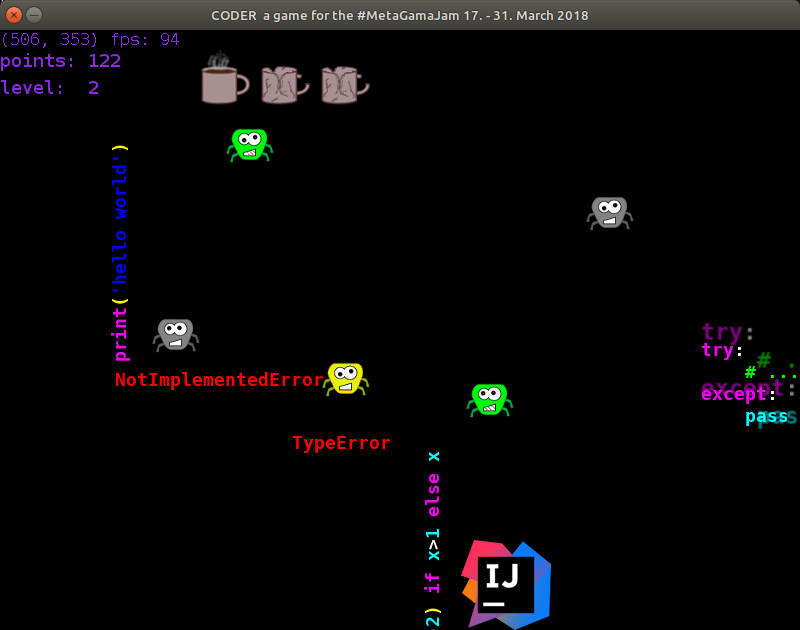
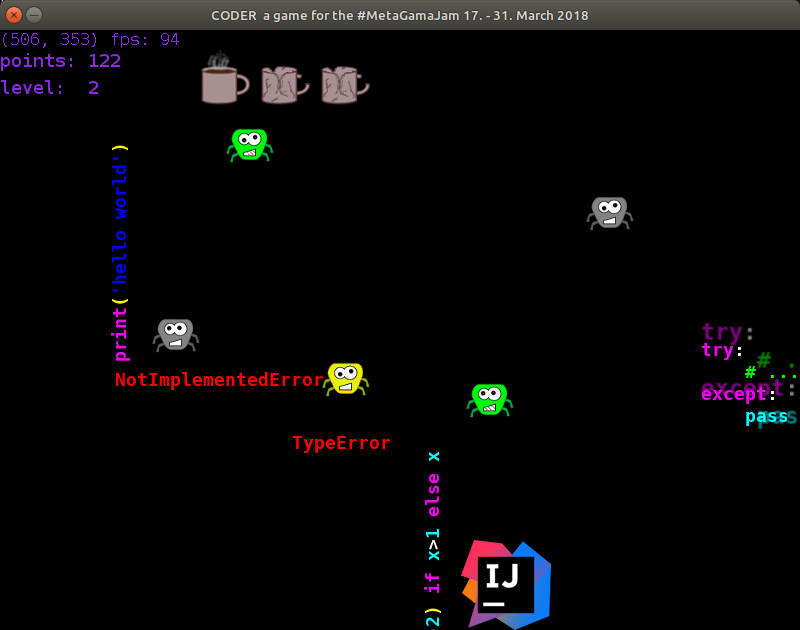

Meta Game Jam 2018
2018-04-16
This is my first blog post about my first (published) game, developed for the MetaGameJam.
What is the MetaGameJam?
The #MetaGameJam is a coding challenge on itch.io hosted by Xavier Ekkel. The participants had two weeks (from 2018-03-17 to 2018-03-31) to develop a meta game. A meta game as defined by Xavier for the MetaGameJam is a game about games or more specific a game that:
- comment on / deconstruct / parody / satire game design, game mechanics, games development, or game culture; and/or
- heavily feature the use of meta-references (such as breaking the fourth-wall) or other metafiction elements; and/or
- provide a level of abstraction above an existing ‘game’ (e.g. gamification, ARGs, analysing opponents/strategies in esports)
My MetaGameJam Story
My friend Daniel Nimmervoll created an itch.io account for us and told me, that he has signed us up for the MetaGameJam! My first reaction was like “wow, good idea, lets do it!” my second reaction was more like “wtf, how should we handle that?”.
My starting conditions for the jam were far from perfect because my girlfriend was about to leave here flat and move to mine in exactly those two weeks. In my experience relocating is a lot of work and time consuming. Beside that I had a stressful time at my day job.
Spoiler: Everything turned out to be handleable. Relocation was really relaxed and day job was ok.
We started our work on the game jam with a short brainstorming. We quickly came up with the main idea: a two axis arcade game (’cause that seemed doable for us; we have never published a game before!). We wanted to make it a browser game, but neither me nor Daniel had experience with html+js. We tried it anyways … for about 15 minutes. After that 15 minutes of desperate javascript googling, copying and pasting we decided to stick with python and pygame, and don’t do a browser game. A windows and of course linux version must be enough.
First sketch of our game “coder”
Then we started with development. From scratch. Daniel started with a prototype of the main game mechanics and I started with some animations. I am not an artist, I am not a drawer, I am a programmer. I do not like drawing very much, especially on the computer. To be more precise: I try to avoid using my mouse whenever possible :-)
But we made good progress in the first few days of the jam. I learned a lot about the pygame sound system, how to use gimp and audacity and we had a lot of fun discussing features of the game.

First screenshot of our game “coder”
After one week we had a more or less playable game but there were still lot of missing features.
Having a playable game is dangerous! You have to be very strict with yourself to not play but to develop your game.
In the second week we did a lot of balancing and added a bunch of features like a menu, a highscore screen, a select-your-editor-dialog, splash screens, credits screen and a nice (but hopefully never seen by anyone) bug report screen.
 
 More screenshots of our game “coder”
On the last day we had a more or less finished game. But we made one big mistake! We had never build or tried it on Windows! (We both use linux on our personal computers). As you might guess there are some differences between windows and liunx. We had to find out how pyinstaller (a great tool btw!) works on windows. We had to set up older linux systems with 32 and 64 bit, we had to test everything, we had to learn how to upload to itch.io, we had to … and everything in the last few hours. I felt really really stressed.
But we finally did it. We released our first game ever. Let’s Party!
c-0-d-3-r our MetaGameJam game
If you are interested in our game. Its called coder btw. you can download linux versions for 32 bit and 64 bit and a windows version here:
Other MetaGameJam games
I have tried lots of other MetaGameJam titles and want to share my top 3 with you.
- A very meta platformer puzzle game
- An awesome action platformer
- A DOS prompt based dungeon (file system) game
There are lots of other really great games. I was totally overwhelmed when I saw what games were created by small teams in just two weeks. It is definitely worth to give them a try, so visit the MetaGameJam entries page. Or watch one of the great Let’s Plays, for example this mega series.
Lessons Learned
My first released game and everything went surprisingly good but there is still one major lessons learned:
Conclusion
It was a really great experience and a lot of fun.
We developed a simple fun game and released it.
Some people downloaded our game and gave us quite good feedback, which is a great feeling.
The participants (at least those I had contact via twitter or comments) were really friendly and respectful and gave good feedback.